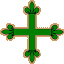

Les Ordres Ibériques
ESPAGNE
 L'Ordre de Calatrava
L'Ordre de Calatrava
L'Ordre de Calatrava (Órden de Calatrava), le plus ancien des ordres ibériques, fut fondé en 1158 par Raimundo Serrat, abbé du monastère cistercien de Fitero, en Espagne, pour défendre la forteresse de Calatrava située le long de la frontière avec la zone musulmane, au sud de la Castille. Cette forteresse (Qal'at Rabah) avait été reprise aux Maures en 1145, par le roi de Castille Alfonso VII, qui l'avait préalablement donnée aux Templiers. Mais, les Templiers, se sentant incapables de la défendre face à l'offensive des Almohades, avaient rendu la forteresse au roi dix ans plus tard.
L'Ordre de Calatrava fut confirmé par le pape Alexandre III, le 25 septembre 1164.
Par une déclaration du chapitre général, datée du mois de septembre 1187, les membres de l'Ordre de Calatrava furent affiliés à l'Ordre de Cîteaux. Les chevaliers résidaient dans des châteaux, alors que les chapelains, qui étaient clercs, vivaient dans des prieurés. Cependant, tous les membres de l'ordre étaient considérés comme des moines cisterciens, et devant en appliquer la règle. De la même manière que les Templiers, les membres de l'ordre n'exerçaient aucune activité hospitalière.
L'Ordre de Calatrava est le plus important ordre ibérique, beaucoup d'autres ordres lui sont affiliés, ou lui ont été rattaché : Alcántara, Aviz, rejoints plus tard par l'éphémère ordre de Santa Maria, et par les ordres de Montesa et du Christ, nés des dépouilles de l'Ordre du Temple. L'ensemble de ces ordres constitue la grande famille des ordres militaires cisterciens.
Calatrava fut rattaché à la Couronne d'Espagne par les Rois Catholiques en 1487, à la mort du trentième grand maître. Le 25 juillet 1835, le gouvernement espagnol ayant supprimé les monastères, le prieur du Sacro Convento fut expulsé, tandis que les chevaliers faisaient sauter leur propre forteresse. La situation des ordres ne fut réglée que le 17 octobre 1851 quand ils furent tous regroupés sur un même territoire, celui de Ciudad-Real, qui constitua un diocèse exempt et reçut le titre de Privato de las Ordenes. A sa tête se trouve l'évêque prieur, assisté d'un chapitre canonial dont les membres appartiennent obligatoirement à l'un des quatre ordres : Calatrava, Alcántara, Saint-Jacques-de-l'Epée et Montesa.
L'Ordre de Calatrava est devenu aujourd'hui purement honorifique, mais des Comendadoras vivent encore dans deux couvents, à Madrid et à Burgos.
 L'Ordre d'Alcántara
L'Ordre d'Alcántara (Órden de Alcántara) aurait été fondé en 1177, à l'imitation de l'Ordre des Templiers. Mais, son origine date de 1156, où deux frères, Suarez et Gomez, sur le conseil d'un ermite, bâtirent une forteresse sur les frontières de Castille, dans le diocèse de Ciudad Rodrigo, pour résister aux Maures. Ils lui donnèrent le nom de Saint-Julien-du-Poirier (San Julián del Pereiro). L'établissement fut confirmé, en tant qu'ordre religieux et militaire, par le pape Alexandre III, en 1177, à la prière de Gomez qui n'avait alors que le titre de prieur. Mais, dans une bulle du pape Lucius III, datée de 1183, il est désigné comme grand maître. Par ailleurs, cette bulle octroya aux chevaliers la règle de Saint Benoît.
Sous le deuxième grand maître, Don Benoît Suarez, se fit l'union fraternelle avec les chevaliers de Saint-Jacques-de-l'Epée. Les deux grands maîtres jurèrent une alliance éternelle entre eux et un fidèle attachement aux rois de Castille et de León contre les Maures. Les chevaliers reçurent la règle de Cîteaux et leur sceau porta un poirier en mémoire de leur institution.
Le roi de León Alfonso IX, qui s'était rendu maître d'Alcántara, sur le Tage, en 1217, en fit don aux chevaliers de Calatrava. Mais ces derniers conseillèrent au souverain de confier la place aux chevaliers de Saint-Julien qui avaient participé aux combats, à condition qu'ils se réunissent à ceux de Calatrava. L'union se fit en 1218 mais les chevaliers d'Alcántara, qui prirent alors leur dénomination actuelle, n'en conservèrent pas moins leur indépendance et prirent une part importante dans les guerres successives contre les Maures.
Supprimé une première fois en 1872, l'Ordre d'Alcántara fut définitivement rétabli par le général Franco en 1936.
 L'Ordre de Montesa
L'Ordre de Montesa
L'Ordre de Montesa (Órden de Montesa) tire son origine de l'Ordre du Temple. Lorsqu'en 1312, l'Ordre du Temple fut dissous par le pape Clément V, ses biens furent transférés à l'Ordre de l'Hôpital, cependant, le roi d'Aragón Jaime II, refusa cette fusion dans ses différents états. En 1317, il finit par accepter un compromis : la fusion est réalisée en Aragón et en Catalogne ; mais, dans le royaume de Valence, il est créé le nouvel ordre de « Nuestra Señora de Montesa » à partir de la branche des Templiers reconnue innocente lors du procès.
En 1317, le pape Jean XXII approuva les statuts de l'ordre, peu différents de ceux des Templiers. La mission première de l'ordre de Montesa, était de défendre la côte du royaume de Valence contre les pirates et les maures. Celui-ci suivait la règle de Cîteaux, mais était placé sous la tutelle de l'abbaye catalane de Santes Creus. Il était affilié à l'Ordre de Calatrava, dont il emprunta la croix aux lys, mais gardait néanmoins son indépendance.
En 1400, l'Ordre de Montesa absorba l'ancien ordre de « Saint-Georges-d'Alfama », et adopta sa simple croix rouge rappelant l'ancienne croix du Temple.
Le premier des 14 grands maîtres qui gouvernèrent l'ordre fut Guillermo d'Eril. En 1587, Philippe II unit l'ordre de Montesa à la couronne, les rois d'Espagne furent depuis lors les maîtres de l'ordre.
Au XIXe siècle, l'état espagnol expropria l'ordre de ses possessions, par conséquent, aujourd'hui, ce n'est plus qu'un ordre honorifique.
PORTUGAL
 L'Ordre du Christ
L'Ordre du Christ
Après l'abolition de l'Ordre du Temple, le roi de Portugal Dinis Ier obtint, en 1319, du pape Jean XXII l'autorisation de créer la " Milice du Christ " (en portugais : Ordem Militar de Christo). Ce fut, dans le principe, une simple continuation, sous un nom nouveau, de celui du Temple et de nombreux Templiers y trouvèrent refuge. Les chevaliers du Christ, comme ceux du Temple, étaient destinés à combattre les Maures ; ils conservèrent l'habit blanc et la croix rouge du Temple. Même s'il était exclusivement Portugais, l'Ordre du Christ restait cependant affilié à celui de Calatrava. Le chef-lieu de l'ordre était à Castro-Marino ; plus tard, il fut transporté à Thomar.
Cet ordre était soumis à la règle de Saint Benoît et les chevaliers jouissaient de tous les privilèges, droits, exemptions et juridictions dont avaient bénéficié les chevaliers du Temple. Ils furent peu à peu déchargés des trois vœux de pauvreté, de chasteté et d'obéissance. Alexandre VI (pape de 1492 à 1503) leur permit de se marier et les rois de Portugal les comblèrent de richesses. Jean Ier (roi de 1385 à 1433) leur abandonna même toutes les possessions et les colonies de l'Afrique, ne se réservant que le droit de suzeraineté. Mais l'ordre devint si puissant qu'il fut décidé que ses nouvelles conquêtes seraient une propriété de la couronne et le pape Jules III réunit, en 1550, la grande maîtrise de l'ordre à la couronne de Portugal. Les rois, à dater de ce jour, devinrent les administrateurs de l'ordre.
A la fin du Moyen Age, l'Ordre du Christ est le seul ordre ibérique qui continue à mener une mission originale inspirée de l'idéal des croisades. Il est l'élément moteur de toutes les expéditions des Portugais le long des côtes d'Afrique (Vasco de Gama était chevalier du Christ).
En 1789, l'Ordre du Christ, comme celui d'Aviz, fut réorganisé par la reine Maria qui lui donna de nouveaux statuts, en vigueur jusqu'en 1918. Il était devenu purement honorifique. Les statuts actuels datent du 24 novembre 1963 et l'ordre prend place après celui d'Aviz. Il est actuellement conservé par la république, en tant que récompense pour d'éminents services civils, et, peut être décerné à de hautes personnalités étrangères.
Il est communément admis que dans l'autorisation originelle de créer l'Ordre du Christ du Portugal, en 1319, la papauté se réservait le droit d'admettre des chevaliers ; mais il n'existe aucune trace de cette pratique à cette époque. Au cours du XVIIe siècle, Rome créa quelques " Chevaliers du Christ ". Cependant, les rois du Portugal s'opposèrent énergiquement à cette pratique. Toutefois, en 1905, le pape Pie X créa l'Ordre Suprême de Notre Seigneur Jésus Christ, en tant que plus important ordre pontifical. Depuis Paul VI, il n'a été conféré qu'à des chefs d'états pour des raisons exceptionnelles.